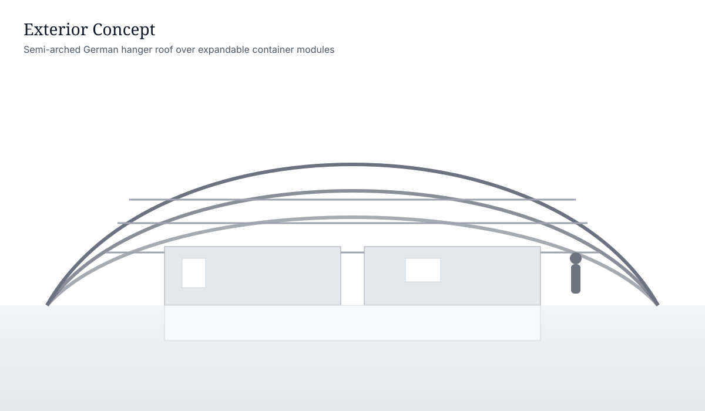
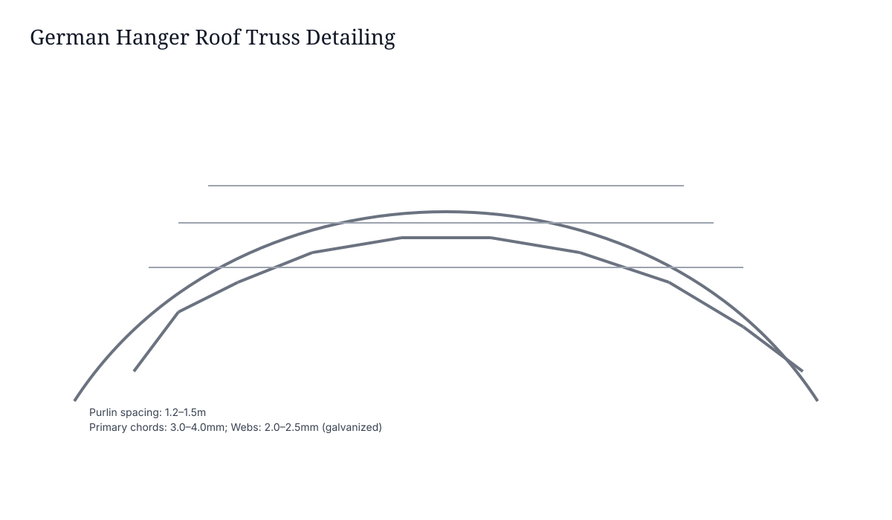
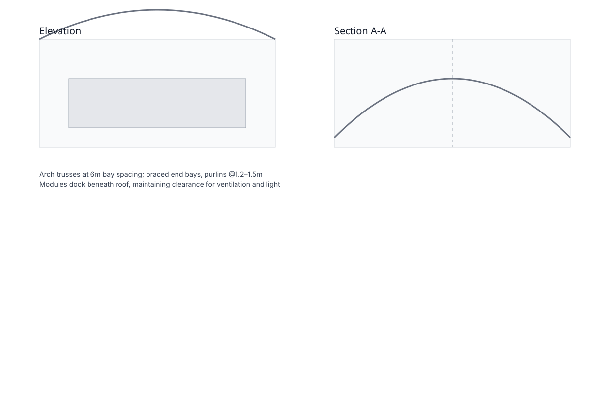
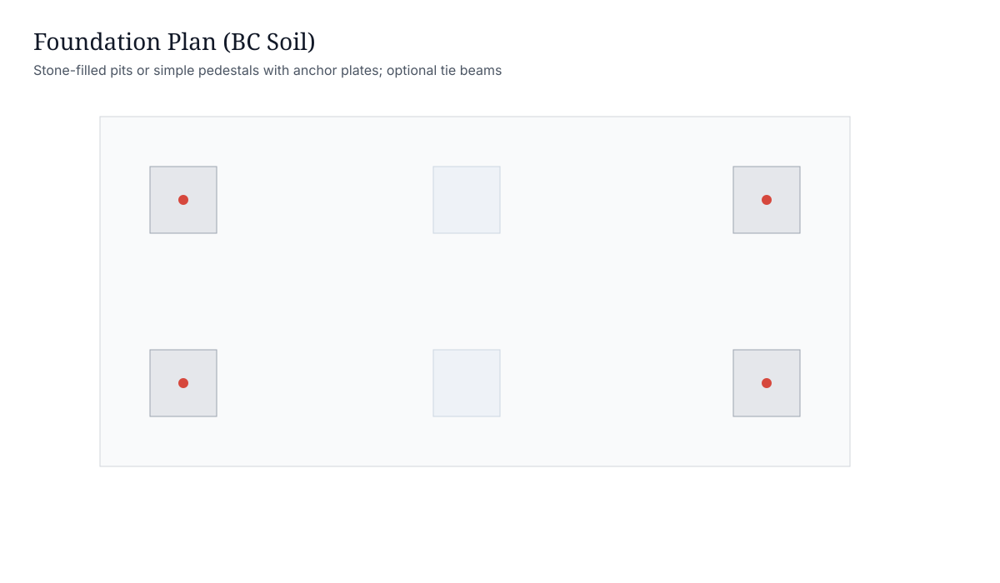

Structural Concept

Long-Span Semi-Arched Roof
Hot-galvanized steel trusses form semi-arched bays. Purlins support waterproof roof panels with anti-condensation layer. Wind bracing at end bays and ridge maintains stiffness and stability.

Truss & Purlins
Curved arch chords with web members and bolted node plates. Purlin spacing 1.2–1.5m (typical). Primary chords 3.0–4.0mm CFS/BTS; secondary members 2.0–2.5mm.
Technical Drawings (Representation)


Project Gallery
Materials & Installation
Material Specifications
Truss chords: 3.0–4.0mm galvanized steel; webs: 2.0–2.5mm
Roof panels: waterproof galvanized sheets + anti-condensation layer
Purlins: galvanized, spaced at 1.2–1.5m
Fasteners: bolted node plates; bracing at end bays
Foundations & Installation
Foundations: stone-filled pits or simple pedestals with anchor plates (BC soil compatible)
Install: truss kits shipped flat, bolted on site; align purlins and roof panels
Welding: MIG fillet welds (6–8mm) where specified; galvanized post-weld coating
Transport: nested arch segments and purlins in 40HQ
Advantages
Wind Resistance
Braced semi-arched trusses deliver strong wind performance.
Fast Installation
Flat-packed kits bolt on prepared pedestals rapidly.
Low Cost
Optimized fabrication and simple foundations reduce cost.
Scalable
Add bays and adjust purlin layout as needs grow.
Durable
Galvanized steel members with protected roof assemblies.
Versatile
Works for sheds, storage, farm, site facilities, and more.